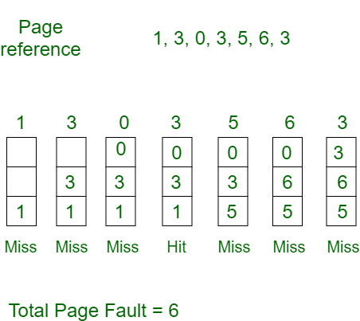
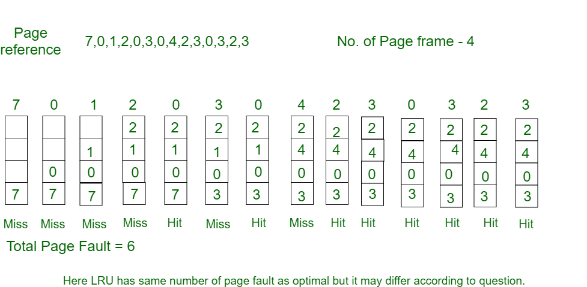
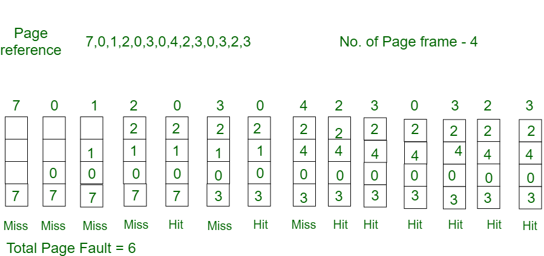

Paging
Paging is a function of memory management where a computer will store and retrieve data from a device's secondary storage (hard disk, SSD) to the primary storage (RAM). Memory management is a crucial aspect of any computing device, and paging specifically is important to the implementation of virtual memory.
Virtual memory, what paging is used for often, is a memory management technique where secondary memory can be used as if it were a part of the main memory. Paging acts as an important part of virtual memory, as it allows programs in secondary storage to exceed the available size of the physical storage.
Page Replacement Algorithms in Operating Systems
In an operating system that uses paging for memory management, a page replacement algorithm is needed to decide which page needs to be replaced when new page comes in.
Page Fault-A page fault happens when a running program accesses a memory page that is mapped into the virtual address space, but not loaded in physical memory.
Since actual physical memory is much smaller than virtual memory, page faults happen. In case of page fault, Operating System might have to replace one of the existing pages with the newly needed page. Different page replacement algorithms suggest different ways to decide which page to replace. The target for all algorithms is to reduce the number of page faults.
Page Replacement Algorithms:
1. First In First Out
This is the simplest page replacement algorithm. In this algorithm, the operating system keeps track of all pages in the memory in a queue, the oldest page is in the front of the queue. When a page needs to be replaced page in the front of the queue is selected for removal.
Example:Consider page reference string 1, 3, 0, 3, 5, 6, 3 with 3 page frames.Find number of page faults.

Initially all slots are empty, so when 1, 3, 0 came they are
allocated to the empty slots —> 3 Page Faults.
when 3 comes, it is already in memory so —>
0 Page Faults.
Then 5 comes, it is not available in memory so it replaces the
oldest page slot i.e 1. —> 1 Page Fault.
6 comes, it is also not available in memory so it replaces the
oldest page slot i.e 3 —>1 Page Fault.
Finally when 3 come it is not available so it replaces 0—>1 Page Fault.
2. Least Recently Used
In this algorithm page will be replaced which is least recently used.
Example:Consider the page references 7, 0, 1, 2, 0, 3, 0, 4, 2, 3, 0, 2, 3 with 4 page frame. Find number of page fault.

Initially all slots are empty, so when 7 0 1 2 are allocated to the
empty slots —>4 Page faults
0 is already there so —> 0 Page fault.
when 3 came it will take the place of 7 because it is least recently
used —>1 Page fault
When 4 comes in it will take place of 1 because it is least recently
used —>1 Page fault
Now for the further page
reference string —> 0 Page fault
because they are
already available in the memory.
3. Optimal Page Replacement
In this algorithm, pages are replaced which would not be used for the longest duration of time in the future.
Example:Consider the page references 7, 0, 1, 2, 0, 3, 0, 4, 2, 3, 0, 2, 3 with 4 page frame. Find number of page fault.

Initially all slots are empty, so when 7 0 1 2 are allocated to the
empty slots —>4 Page faults
0 is already there so —> 0 Page fault.
when 3 came it will take the place of 7 because it is not used for
the longest duration of time in the future. —>1 Page fault
0 is already there so —> 0 Page fault
4 will takes place of 1 —> 1 Page Fault.
Now for the further page reference string —>
0 Page fault
because they are already available in the memory.
Optimal page replacement is perfect, but not possible in practice as the operating system cannot know future requests. The use of Optimal Page replacement is to set up a benchmark so that other replacement algorithms can be analyzed against it.